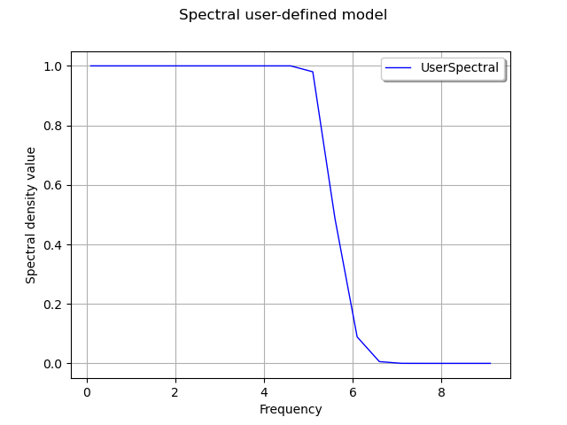

Note
Go to the end to download the full example code
Create a spectral model¶
This use case illustrates how the User can define his own density spectral function from parametric models. The library allows it thanks to the object UserDefinedSpectralModel defined from:
a frequency grid
 with step
with step  , stored
in the object RegularGrid,
, stored
in the object RegularGrid,a collection of hermitian matrices
 stored in the object HermitianMatrixCollection, which are the
images of each point of the frequency grid through the density
spectral function.
stored in the object HermitianMatrixCollection, which are the
images of each point of the frequency grid through the density
spectral function.
The library builds a constant piecewise function on ![[-f_c,f_c]]() , where
the intervals where the density spectral function is constant are
centered on the points of the frequency grid, of length .
Then, it is possible to evaluate the spectral density function for a
given frequency thanks to the method [computeSpectralDensity]{}: if
the frequency is not inside the interval , an exception is thrown.
Otherwise, it returns the hermitian matrix of the
subinterval of that contains the given frequency.
, where
the intervals where the density spectral function is constant are
centered on the points of the frequency grid, of length .
Then, it is possible to evaluate the spectral density function for a
given frequency thanks to the method [computeSpectralDensity]{}: if
the frequency is not inside the interval , an exception is thrown.
Otherwise, it returns the hermitian matrix of the
subinterval of that contains the given frequency.
In the following script, we illustrate how to create a modified low
pass model of dimension  with exponential decrease defined by:
with exponential decrease defined by:
 where
where
Frequency value
 should be positive,
should be positive,for
 , the spectral density function is constant:
, the spectral density function is constant:  ,
,for
 , the spectral density function is equal to
, the spectral density function is equal to ![S(f) = \exp \left[- 2.0 (f - 5.0)^2 \right]]() .
.
The frequency grid is ![]0, f_c] = ]0,10]]() with
with  Hz.
The figure draws the spectral density.
Hz.
The figure draws the spectral density.
import openturns as ot
import openturns.viewer as viewer
from matplotlib import pylab as plt
import math as m
ot.Log.Show(ot.Log.NONE)
Create the frequency grid:
fmin = 0.1
df = 0.5
N = int((10.0 - fmin) / df)
fgrid = ot.RegularGrid(fmin, df, N)
Define the spectral function:
def s(f):
if f <= 5.0:
return 1.0
else:
x = f - 5.0
return m.exp(-2.0 * x * x)
Create the collection of HermitianMatrix:
coll = ot.HermitianMatrixCollection()
for k in range(N):
frequency = fgrid.getValue(k)
matrix = ot.HermitianMatrix(1)
matrix[0, 0] = s(frequency)
coll.add(matrix)
Create the spectral model:
spectralModel = ot.UserDefinedSpectralModel(fgrid, coll)
# Get the spectral density function computed at first frequency values
firstFrequency = fgrid.getStart()
frequencyStep = fgrid.getStep()
firstHermitian = spectralModel(firstFrequency)
# Get the spectral function at frequency + 0.3 * frequencyStep
spectralModel(frequency + 0.3 * frequencyStep)
Draw the spectral density
# Create the curve of the spectral function
x = ot.Sample(N, 2)
for k in range(N):
frequency = fgrid.getValue(k)
x[k, 0] = frequency
value = spectralModel(frequency)
x[k, 1] = value[0, 0].real
# Create the graph
graph = ot.Graph(
"Spectral user-defined model", "Frequency", "Spectral density value", True
)
curve = ot.Curve(x, "UserSpectral")
graph.add(curve)
graph.setLegendPosition("topright")
view = viewer.View(graph)
plt.show()
